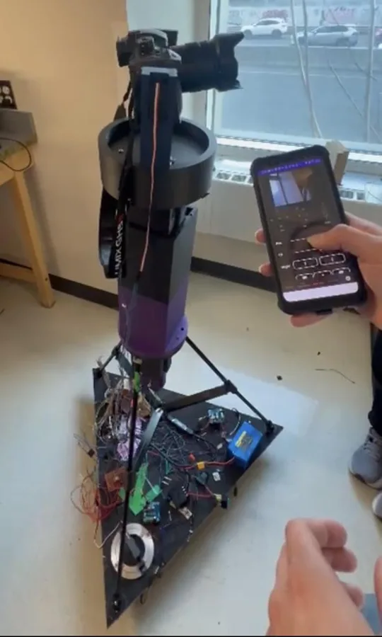
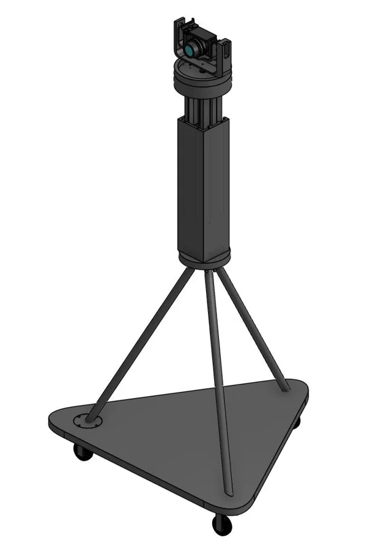
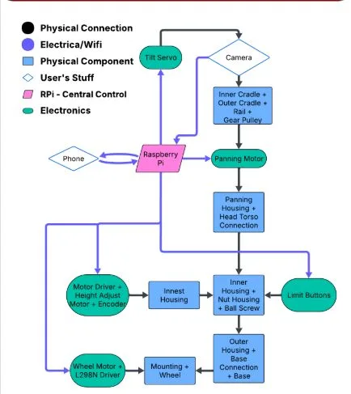
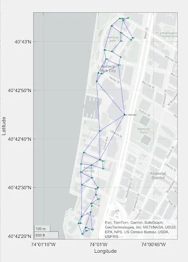
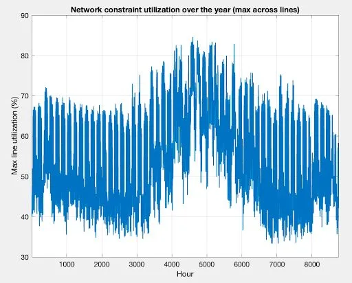
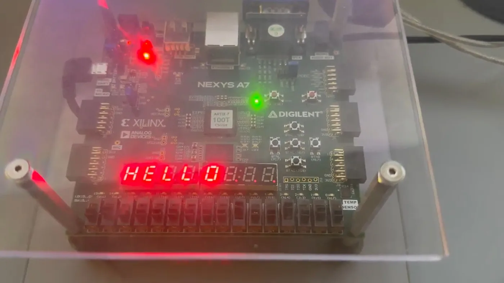
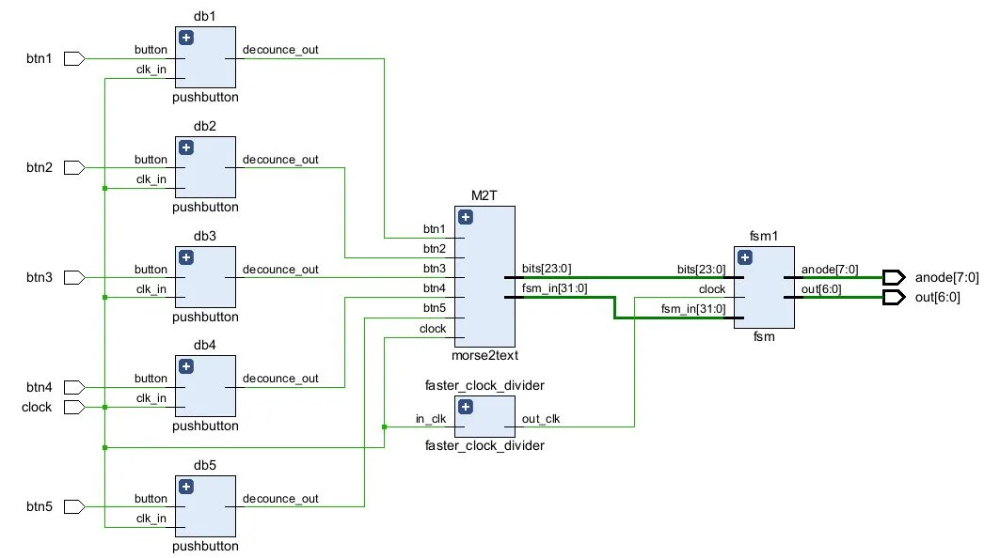
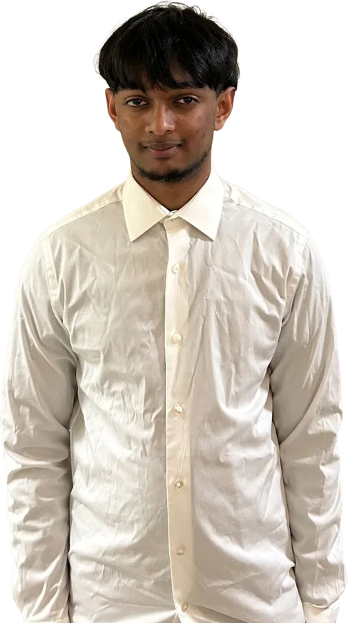

Motorized tripod
A camera tripod that pans, tilts, changes height and drives on wheels, all controlled from an Android phone over Wi‑Fi. The camera feed streams back to the phone.
My part was the physical base and the power. I built the legs and the triangular support underneath that keeps it stable, fixed the wheel axles so it rolls smoothly, and wired the motor drivers, buck converter, 12 V power lines and 5 V control lines.
Raspberry Pi, L298N motor drivers, buck converter, encoders, CAD



Rooftop solar in Battery Park City
A model of the Battery Park City distribution network in Lower Manhattan, built to see how much rooftop solar the grid can take and where it pays off.
Rooftop potential came from Google Project Sunroof and grid limits from Con Edison hosting-capacity data. DC optimal power flow ran over a full year of hourly load, with network constraints and installation costs.
MATLAB, YALMIP, DC optimal power flow, hosting capacity analysis


Morse code translator
Tap Morse code on the push buttons of a Nexys A7 FPGA and the letters appear on its 7‑segment display.
Written in Verilog: debounced button inputs, a decoder module, a clock divider and a state machine that drives the display.
Verilog, Digilent Nexys A7, finite state machines, 7‑segment display control


